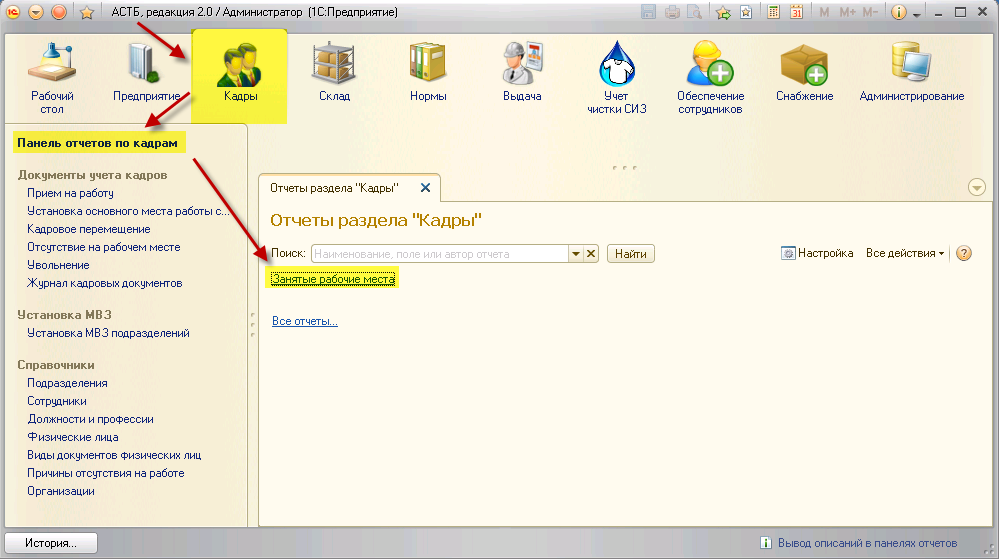
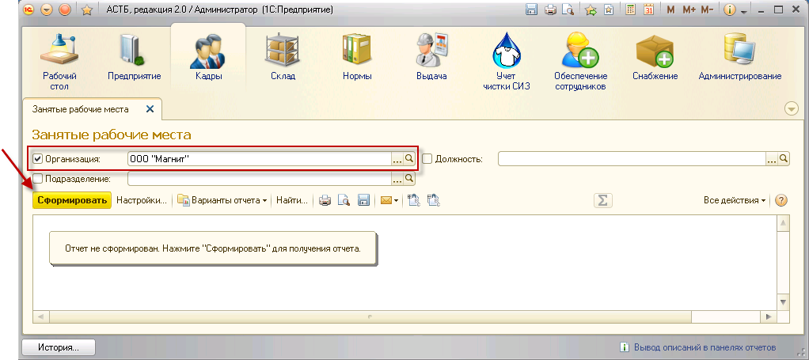
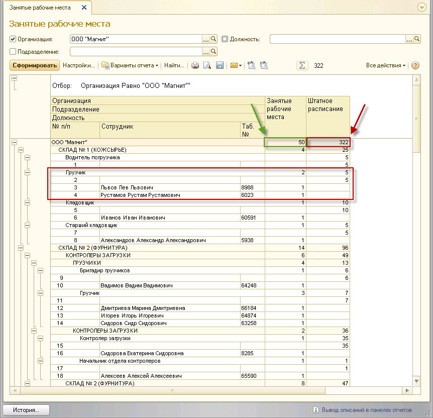
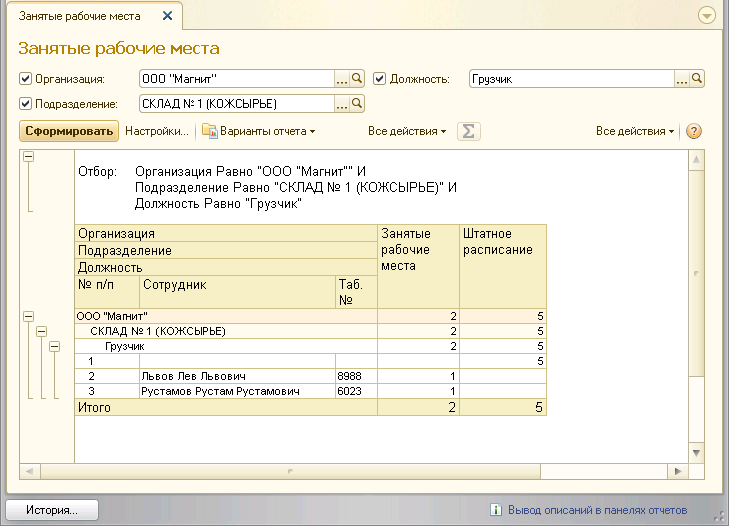

Данный отчет отображает данные по устроенным сотрудникам, их табельным номерам и должностям в составе подразделений, а также количество ставок, установленных штатным расписанием. Для просмотра отчета необходимо зайти в раздел «Кадры», «Панель отчетов по кадрам», и выбрать отчет «Занятые рабочие места».

Откроется окно отчета. Чтобы просмотреть данные по всем устроенным сотрудникам и штатному расписанию организации, отметьте флажком поле «Организация» и задайте его значение. Затем нажмите на кнопку «Сформировать».

Будет сформирован полный отчет по кадрам выбранной организации.
На примере ниже: количество занятых рабочих мест в организации – 50, общее количество рабочих мест – 322. Количество грузчиков в подразделении «Склад № 1 (КОЖСЫРЬЕ)» – 2 (Львов Л.Л., Рустамов Р.Р.), по штатному расписанию в указанном подразделении может числиться 5 грузчиков, соответственно, 3 рабочих места остаются вакантными.

Также существует возможность формирования отчета по отдельной должности или подразделению. Чтобы задать подразделение и/или должность, в панели настроек проставьте флажки напротив соответствующих полей и задайте их значения с помощью кнопки <...>. Нажмите кнопку «Сформировать».

Будет сформирован отчет в соответствии с выбранными значениями полей «Должность» и «Подразделение».

Чтобы распечатать сформированный отчет, нажмите кнопку  на командной панели отчета. Сохранить отчет можно с помощью кнопки
на командной панели отчета. Сохранить отчет можно с помощью кнопки  .
.